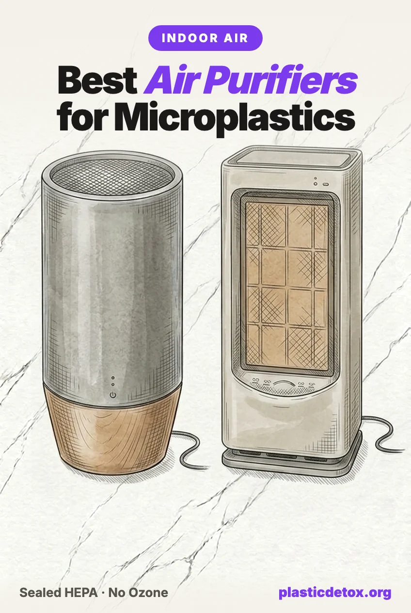

Best Air Purifiers for Microplastics (2026): The Sealed HEPA Units That Actually Capture Airborne Plastic

The 30 Second Summary
- Indoor air can hold far more microplastics than outdoor air. Synthetic clothing, carpet, upholstery, and household dust shed fibers you breathe all day, and the bedroom is where exposure concentrates because you breathe close to your bedding for a third of your life.
- A sealed True HEPA purifier is the single most effective fix. An H13 HEPA filter captures 99.97% of particles at 0.3 microns, and captures both the larger fibers and the smaller nanoplastics even more efficiently. Nothing else moves your airborne exposure this much for this little effort.
- Skip anything that makes ozone. Ionizers, plasma, bipolar, and so called activated oxygen units add a lung irritant to your air. Choose mechanical filtration only.
- How we choose: filtration first, then build, then room match. True sealed HEPA, no ozone, verified clean air delivery rate, then the right size for your room. We exclude anything under recall.
- Top pick: Coway Airmega AP-1512HH Mighty, the most reviewed sealed True HEPA unit, quiet enough for a bedroom. Want a steel body instead of plastic? The compact Austin Air it covers a bedroom, and the Austin Air HealthMate covers large rooms.
- Best overall: Coway Airmega Mighty, most reviewed, quiet, right sized for a bedroom.
- Large and open rooms: Coway Airmega 400, dual HEPA for up to 1,560 sq ft.
- Steel body, no plastic: Austin Air it for bedrooms and offices, or the Austin Air HealthMate for large rooms with a five year filter.
Most of the conversation about microplastics is about what you eat and drink. The route people forget is the one that runs all day: the air. Indoor air can carry many times the microplastic load of outdoor air, because your home is full of the things that shed it, synthetic clothing, carpet, upholstery, curtains, and the dust that collects it all. You breathe roughly 15,000 liters of that air a day, and a meaningful share of what you inhale is plastic fiber.
You cannot stop breathing, and you will not rip out every synthetic fabric in the house. What you can do is filter the air in the room where you spend the most concentrated time. A sealed True HEPA air purifier in the bedroom is one of the highest certainty, lowest effort swaps available, which is why we treat it as the anchor of any serious plan to reduce inhaled plastic. This guide covers what actually works, what to avoid, and the specific units we would buy.
Do air purifiers actually remove microplastics?
Yes, if the filter is real. A True HEPA filter is defined by a single number: it captures 99.97% of particles at 0.3 microns, the hardest size to catch. That 0.3 micron figure is the worst case, not the limit. Particles larger than that, which includes almost every airborne microplastic fiber, are trapped even more reliably by interception and impaction. Particles much smaller than that, down into the nanoplastic range, are caught more efficiently too, because tiny particles move erratically and collide with the fibers through diffusion. In other words, HEPA is strong at exactly the two ends of the microplastic size range that matter.
Airborne microplastics are mostly fibers shed from textiles, typically ranging from a few microns to several thousand microns long. A sealed H13 HEPA system removes them from the air on each pass. The catch is in the two words doing the work: sealed and True. A filter only helps if all the air is forced through it rather than leaking around it, and only if it meets the real HEPA standard rather than a marketing imitation.
What to look for
Five things separate a purifier that changes your air from one that just makes noise.
- True HEPA, H13 or better. Look for the words True HEPA or a stated H13 or H14 grade. Avoid anything labeled HEPA type, HEPA like, or 99% HEPA. Those are lower grade filters that let a significant share of fine particles pass straight through.
- A clean air delivery rate that matches your room. The clean air delivery rate, or CADR, tells you how much filtered air the unit actually produces. For particle removal you want enough CADR to cycle the room's air around five times an hour. An undersized unit in a big room cannot keep up no matter how good the filter is. Check the square footage rating and match it to your space.
- A sealed housing. The air must be forced through the filter, not around it. Better units seal the filter against the housing so there is no bypass. Many cheap models leave gaps that let unfiltered air recirculate.
- An activated carbon stage. HEPA catches particles, carbon catches gases. A carbon stage helps with the volatile organic compounds and odors that off gas from synthetic furnishings, and adsorbs some airborne PFAS and other semivolatile compounds that ride along with indoor dust. It is a genuine bonus, not the main event, but the good units include it.
- Quiet enough to run all night. The purifier only works while it is on, and the bedroom is where it matters most. If it is too loud to sleep next to, you will switch it off and lose the benefit. Look for a unit rated under about 25 decibels on its lowest setting.
What to skip
Two categories of product are marketed as air purifiers but work against you.
Anything that generates ozone. Ionizers, ionic units, plasma, bipolar ionization, and devices sold as producing activated oxygen, super oxygen, or energized oxygen all release ozone, either on purpose or as a byproduct. The California Air Resources Board, which regulates these devices, is blunt about it: ozone irritates the airways and can cause inflammation, breathing difficulty, and lasting lung damage. You are trying to protect your lungs, not dose them. Choose mechanical filtration only, meaning HEPA and carbon. There is an important distinction here. Some strong HEPA units, the Coway line among them, include an optional ionizer that is off by default: leave it off and you get pure mechanical filtration. The ones to be wary of are units where the ionization cannot be turned off because it is built into how they filter. Blueair's HEPASilent is the common example: it is CARB certified and tests very low for ozone, but it is electrostatic rather than purely mechanical, so it is listed as an ionizer in the state's own database. It is not dangerous, but if your goal is zero added ozone, we point you to a purely mechanical unit or one with a switchable ionizer instead.
Brands whose True HEPA claim is under challenge. A cluster of consumer class actions now allege that popular budget purifiers do not actually meet the HEPA standard they advertise. Levoit and Blueair both face HEPA false advertising claims, and in October 2025 Yant v. Winix Global was filed in Illinois federal court over the 5300, 5500, 6300, AM90, C535, C545 and related models, with plaintiff testing reportedly measuring one filter at 93.48 percent under European standards against the 99.97 percent a real HEPA filter must hit. None of this is a safety recall, and the suits are unresolved. But the entire reason to buy one of these is the filtration number, so until the claims are settled we do not recommend a unit whose number is being litigated. Every pick above is from a brand with no such action against it.
Cheap no name marketplace units. In February 2026 the Consumer Product Safety Commission recalled roughly 191,390 Aroeve MK04 air purifiers sold on Amazon, Temu, and TikTok for 80 to 134 dollars, after 37 reports of overheating and one fire. It is a reminder that a device you run continuously, often overnight in a bedroom, is one to buy from an established brand with a real safety record, not the cheapest listing with a generic name.
How we vet air purifiers
We run every appliance through the same five checks we use on any product, adapted for hardware.
- Filtration. Sealed True HEPA at H13 or better, with an activated carbon stage. No exceptions.
- Materials and design. We prefer a steel housing where it exists, and we require mechanical filtration with no intentional ozone or ion output.
- Independent performance data. Verified clean air delivery rates and consistent third party testing, not just the manufacturer's own claims.
- Lawsuits. We steer clear of the bipolar and ionization brands that have drawn scrutiny over ozone, and of the brands facing open class actions over whether their filters meet the HEPA standard they advertise. Every pick here is straightforward filtration from a brand with no such action against it.
- Recalls. We exclude any unit under active recall, including the recalled marketplace models above.
The picks
Our top pick is the unit with the strongest owner track record at a price most people will actually pay. After that the cards run from the least to the most expensive, so you can match the spend to your room and your priorities. If you want to skip plastic housing entirely, the steel bodied Austin Air units are the ones to reach for.

Coway Airmega AP-1512HH Mighty
Sealed True HEPA plus activated carbon. Rated to 361 sq ft, 24.7 dB on low, auto mode with a particle sensor. The most reviewed serious purifier on the market and quiet enough for a bedroom. Its ionizer is optional and off by default, so leave it off for pure mechanical filtration and zero added ozone.
View →
Austin Air it
All steel housing rather than plastic. HEPA filtration captures particles down to 0.1 microns, wrapped in an activated carbon layer for VOCs and odors. Compact at 11 x 11 x 8.4 inches and 12 lbs with touch controls. Purely mechanical, no ionizer. Austin rates it to 750 sq ft, but with no published CADR treat it as a bedroom or office unit.
View →
Coway Airmega 400
Dual sealed True HEPA and carbon filters, rated to 1,560 sq ft. The pick for a living room, a studio, or an open plan space where a bedroom sized unit cannot cycle the air often enough.
View →
Austin Air HealthMate
All steel housing rather than plastic, medical grade HEPA plus 15 lbs of activated carbon and zeolite, rated to 1,500 sq ft. Made in the USA with a 5 year filter. Purely mechanical, no ionizer. The choice if you want to skip the plastic enclosure entirely.
View →
IQAir HealthPro Plus
Sealed HyperHEPA rated to capture particles down to 0.003 microns, deep into the nanoplastic range, plus a large activated carbon and pelletized chemical stage. Purely mechanical, no ionizer. The highest performing sealed unit here, at a premium price.
View →Every pick here is also in our store, grouped by room, so you can browse the full lineup in one place.
The independent numbers: CADR tested
Clean air delivery rate is the one performance figure that is independently measured rather than marketed. The AHAM Verifide program runs a unit in a sealed chamber and certifies how much filtered air it actually delivers, in cubic feet per minute. Higher means faster cleaning and a larger room it can keep up with. Here is where our picks land on dust CADR.
Dust CADR in cubic feet per minute. The green AHAM mark means the figure is AHAM Verifide. IQAir does not submit to AHAM, so its number is the manufacturer figure. The Austin Air units are not plotted because Austin Air does not submit to AHAM: the HealthMate deliberately trades peak airflow for very deep carbon media and a five year filter, and the compact it has no published CADR at all. Bigger is not automatically better. Match the CADR to your room so the unit can cycle the air about five times an hour.
Match the purifier to your room
The single most common mistake is buying a small unit for a big room. Size to the space so the purifier can cycle the air often enough to matter.
| Your space | What to buy | Why |
|---|---|---|
| Nursery or small bedroom, under 220 sq ft | Coway Airmega Mighty | Oversizing a small room is a feature, not waste. More clean air delivery than the room needs means the same air changes on a lower, quieter fan speed |
| Standard bedroom, 220 to 360 sq ft | Coway Airmega Mighty | Right sized for most bedrooms, quiet, auto mode |
| Living room or open plan, 360 to 1,560 sq ft | Coway Airmega 400 or Austin Air HealthMate | Enough clean air delivery to cycle a large volume several times an hour |
| Want a steel body, any size | Austin Air it or Austin Air HealthMate | The compact it for bedrooms and offices, the HealthMate for large rooms with deep carbon |
How to actually use it
- Start in the bedroom. You spend about a third of your life there, breathing close to bedding that sheds fibers. Place the unit within a few feet of the head of the bed. If you buy a second, put it where you spend the most waking hours.
- Run it continuously. Particle levels climb the moment it is off. Leave it on a low, quiet setting around the clock rather than blasting it occasionally. Continuous low beats intermittent high.
- Replace the filters on schedule. A loaded HEPA filter loses efficiency. Most True HEPA filters need replacing every 12 months, carbon every 6 to 12, and washable pre filters a rinse every few weeks. Factor the replacement cost in when you compare units.
- Keep the doors closed. A purifier can only clean the air in the room it is sealing. An open door to a hallway or a synthetic carpeted room keeps feeding it new fibers.
Frequently asked questions
Do air purifiers remove microplastics from the air?
Yes. A True HEPA filter captures 99.97% of particles at 0.3 microns, and airborne microplastic fibers are almost all larger than that, so a sealed HEPA purifier removes them from the air on each pass. For best results, size the unit to your room so it can cycle the air around five times an hour, and run it continuously.
What HEPA grade do I need?
Look for True HEPA at H13 or H14. These grades capture 99.97% or more of fine particles. Avoid anything labeled HEPA type, HEPA like, or 99% HEPA, which are lower grade filters that let a meaningful share of fine particles pass through.
Are ionizing or ozone air purifiers safe?
No. Ionizers, plasma, bipolar, and devices marketed as producing activated or energized oxygen release ozone, a lung irritant that can cause inflammation and breathing problems. The California Air Resources Board regulates these devices for that reason. Choose mechanical filtration only, meaning sealed HEPA and carbon with no ion or ozone function.
Do air purifiers capture nanoplastics too?
Yes. HEPA is often assumed to fail below 0.3 microns, but the opposite is true. Particles smaller than 0.3 microns, including nanoplastics, move erratically and collide with the filter fibers through diffusion, so they are captured more efficiently, not less. Units like the IQAir HealthPro Plus are rated down to 0.003 microns specifically.
Should I run the purifier all night?
Yes, especially in the bedroom. Airborne particle levels rise as soon as the unit is off, and the bedroom is where your inhalation exposure concentrates. Run it on a low, quiet setting continuously rather than intermittently on high.
How often do I replace the filters?
As a rule, replace the True HEPA filter every 12 months and the activated carbon every 6 to 12 months, and rinse any washable pre filter every few weeks. A loaded filter loses efficiency, so filter cost is part of the true cost of any unit.
Related Articles
Setting up a nursery? See Non Toxic Nursery Setup for what to fix first, in order.